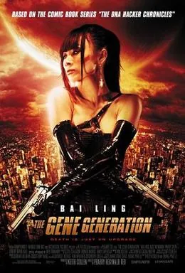

The genetics
Genetic technology is the core of this biopunk thriller. The Transcoder, which reprograms DNA instantly, was created by the scientist Christian with the benevolent aim of ending all disease, but its unpredictable side effects caused a disaster: the company CEO was turned into a monster, the company exploded and the city's atmosphere was poisoned. Knock-off Transcoders now serve 'DNA hackers', criminals who kill by rewriting their victims' DNA (in one scene a tissue coated with genetic material makes a man melt). The world is also divided by genetics: the city of Demeter admits only the genetically pure, a form of genetic discrimination that motivates the heroine. The film is a noir chase after a MacGuffin and offers no scientific detail; it is a cautionary picture of gene editing as both a failed cure and a weapon.
How genetics is portrayed
- Overall portrayal of genetics
- negative A device meant to cure all disease ends in catastrophe and becomes a criminal weapon in a world segregated by genetic purity; genetics is shown as dangerous and divisive.
- Outcome of the genetic intervention
- negative The Transcoder turned its CEO into a monster, destroyed the company and poisoned the city, and its copies are used for murder.
- Christian
- ambivalent Aim: benevolent (positive). The Hayden Technologies scientist built the Transcoder to eliminate all illness, but its side effects caused the disaster that poisoned Olympia; he is the heroine's neighbour and is drawn into the chase on her side, a well-meaning inventor whose work went catastrophically wrong.
- DNA hackers
- villain Aim: malevolent, commercial (negative). Criminals use knock-off Transcoders and genetic material to kill people from inside their bodies; they are the threats Michelle is paid to eliminate.
- Demeter authorities
- neutral Aim: ideological (negative). The city of Demeter admits only the genetically pure, a eugenic selection policy; the sources describe it only as the destination the heroine longs to reach, without moral colouring.
The story
In the decaying future city of Olympia, Michelle is an assassin who hunts 'DNA hackers', criminals who use genetic technology to get inside people's bodies and kill them. She is saving money to buy travel papers for herself and her younger brother Jackie to Demeter, a city that admits only the genetically pure. Years earlier, her neighbour Christian, a scientist at Hayden Technologies, invented the Transcoder, a device that instantly reprograms DNA and was meant to eliminate all illness; its unpredictable side effects turned the company's CEO, Dr. Josephine Hayden, into a tentacled mass, destroyed the company and poisoned Olympia's air. Jackie gambles away Michelle's savings, runs up a debt to the casino owner Randall and steals the Transcoder from Christian, hoping to sell it. Michelle and Christian are drawn into a violent chase for the device, pursued by Randall's thugs and by Hayden's brother Abraham, who wants it to heal his sister.